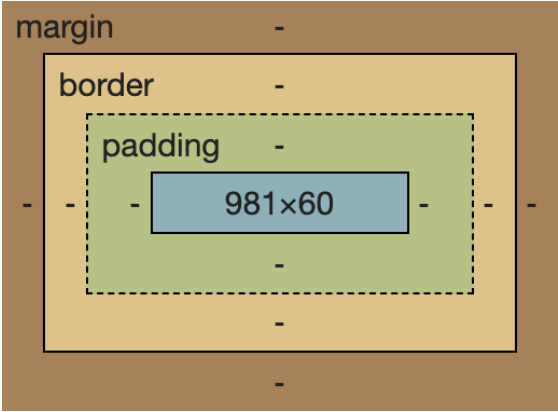

CSS요소3 - 박스 모델
박스모델
브라우저에서는 전부 네모 형태로 계산이 되어진다

바깥쪽부터 margin영역-border영역-padding영역-content영역으로 나눠져있다
▶️ width, height
요소의 너비 및 높이를 설정할 수 있다
.box {
width: 100px;
height: 100px;
}
- px, em, rem, % , vw, vh 단위를 사용할 수 있다
- 상속이 되지 않는다
- 기본값이
auto는 블록요소의 경우 너비가 최대(100%) 높이는 내부 content만큼을 차지한다 - 인라인 요소의 경우 너비 및 너비가 내부 content만큼 차지한다(
width,height지정 x)
▶️ max, min
최대, 최소의 너비 및 높이를 설정할 수 있다.
.box {
width: 50%;
height: 100px;
min-width: 100px;
}
- 위 코드에서 box 클래스는 부모의 50%의 너비를 가지지만 최소 100px의 값을 가진다
max-width,min-width,max-height,min-height
▶️ margin
단축속성으로 다른 요소와의 간격을 조절할 수 있다(요소의 외부 여백을 지정)
.box {
width: 100px;
height: 100px;
margin: 10px;
/* === margin: 10px 10px 10px 10px; */
/* 각각 다른 값을 입력할 수 있고, 특정방향의 margin을 주지 않으려면 0을 입력한다 */
}
margin은 단축속성으로margin-top,margin-right,margin-bottom,margin-left로 구분될 수 있다- 단축속성은 공백으로 구분된다.
margin의 단축속성은margin: top right bottom left;로 시계방향으로 지정하면 된다- 단축속성의 값으로 두개를 입력시 (top, bottom) / (left, right)으로 표현
- 단축속성의 값으로 세개를 입력할 경우 (top) / (left, right) / (bottom) 으로 표현
- %는 부모의 너비(width)를 기준으로 한다
- 음수값이 사용가능하다
▶️ margin collapsong(마진상쇄)
마진이 겹쳐져서 상쇄되는 특성이다 (더 큰값이 적용 - 작은값 무시)
- float요소와 절대위치의 요소는 여뱍상쇄가 일어나지 않는다
이런 현상이 발생될 수 있는 경우
- 인접 형제
- 두 형제의 위아래의 여백이 상쇄됨(좌우는 x)
- 부모 자식요소간
- 부모요소의 여백과 자식요소의 여백이 만났을때(상하) -> border나 padding값으로 구분해줄 수 있다
- 빈블록
- 빈블록이면 해당 블록의
margin-top과margin-bottom이 만나게 된다 따라서margin-top과margin-bottom중에 더 큰 값으로 상쇄된다
- 빈블록이면 해당 블록의
MDN https://developer.mozilla.org/ko/docs/Web/CSS/CSS_Box_Model/Mastering_margin_collapsing
▶️ padding
단축속성으로 요소 내부의 여백을 줄 수 있다
.box {
padding:10px;
}
padding-top,padding-right,padding-bottom,padding-left순으로 적용가능하다 (시계방향)- 패딩상쇄는 존재하지 않는다
- 음수값을 사용할 수 없다
- 퍼센트(%)를 사용할 경우 부모요소의 가로길이(width)를 기준으로 한다
- 만약 요소의 크기가 100px일때 padding을 추가하면 그만큼 크기가 늘어난다
▶️ border
단축속성으로 요소의 테두리를 설정해줄 수 있다
.box {
border: width style color;
/* border: 1px solid #000; */
}
border의 초기값은 0border-width: 키워드(thin,medium,thick)또는 단위(px)을 사용해서 굵기를 나타낸다border-stylenone: 보이지 않음(우선순위 제일 낮음)hidden: 보이지 않음(우선순위 제일높음)dotted: 둥근 점dashed: 직사각형 여러개solid: 하나의 직선double: 두개의 직선groove: 테두리가 파인 것처럼 보임ridge: 테두리가 튀어나온 것처럼 보임inset: 요소개 파인 것처럼 보임outset: 요소가 튀어나온 것처럼 보임
border-color: 테두리 선의 색상을 설정- 각 속성의 값을 하나를 입력하면 (상 / 하 /)
- 각 속성의 값을 두개 입력하면 (상하 / 좌우)
- 각 속성의 값을 세개 입력하면 (상 / 좌우 / 하)
border: width style color;형태로 단축속성을 작성한다border-bottom처럼 bottom, top, left, right로 지정할 수 있다
▶️ border-radius
테두리 경계를 둥글게 설정해준다
.box {
width: 150px;
height: 150px;
border-radius: 50%;
}
- 모서리 끝에 원이 생겨서
border-radius의 값으로 넣은 값이 반지름이 되고 모서리의 모양이 원의 테두리처럼 반영 border-radius: 50%는 원을 생성한다- 값은 % 또는 px로 지정해준다
- 네가지 값을 입력할 경우 왼쪽 상단부터 시계방향으로 설정이 된다
- 두개의 경우 대각선을 기준으로 (왼쪽상단, 오른쪽하단) / (오른쪽 상단, 왼쪽하단)으로 묶어 표현
- 최대값은 50%이다
▶️ box-sizing
요소의 크기를 어떤 것을 기준으로 지정할지 명시한다
.box {
width: 100px;
height: 100px;
padding: 20px;
border: 10px solid block;
}
box-sizing을 명시하지 않았기 때문에 기본값인 content-box
따라서 전체 크기는 100px(content)+40px(padding)+20px(border) = 160px
.box {
width: 100px;
height: 100px;
padding: 20px;
border: 10px solid block;
box-sizing: border-box;
}
같은 경우에 box-sizing을 border-box로 지정해준 경우에는 border까지의 크기가 100px이 되므로 전체 크기는 100px
- 두가지 값이 있다
content-box: content를 기준으로 지정한 크기로 설정(기본값)border-box: border를 기준으로 지정한 크기로 설정(padding,border가 포함됨)